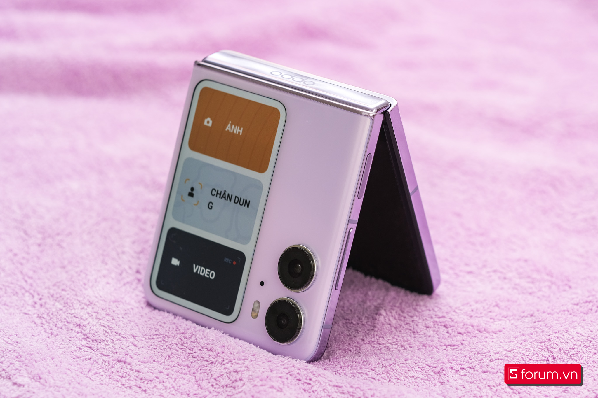
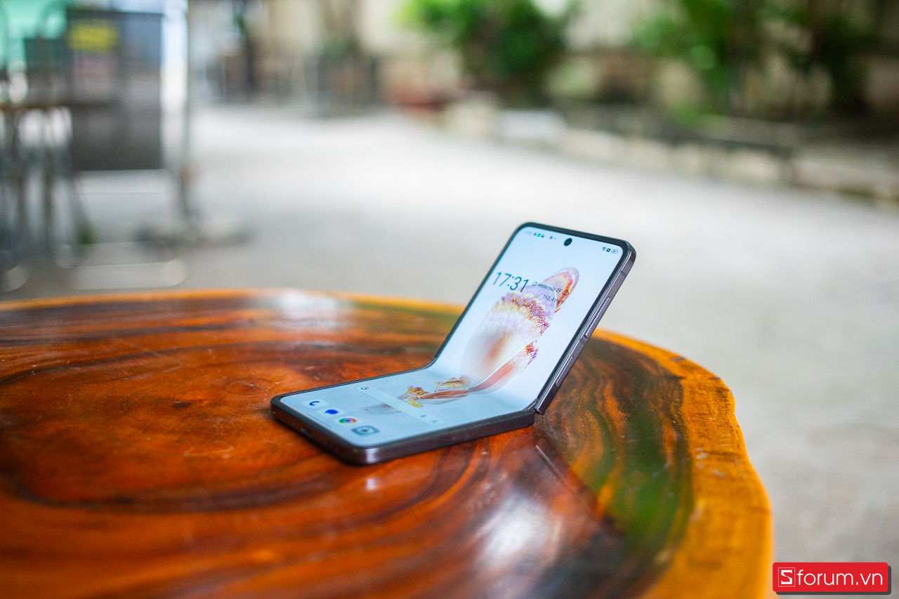

Chia sẻ trải nghiệm dùng OPPO Find N2 Flip sau 6 tháng sử dụng: Thích cái cách OPPO làm điện thoại gập!

OPPO Find N2 Flip là chiếc điện thoại gập vỏ sò đầu tiên mà mình khá hứng thú kể từ sau khi sử dụng Z Fold 3, mọi thứ đều được hoàn thiện một cách chỉn chu và đầy khác biệt.
Nói về điện thoại gập hiện nay, theo mình thì đó không chỉ là một sản phẩm công nghệ cao cấp đơn thuần để các hãng phô diễn sức mạnh công nghệ mà còn mang đến một trải nghiệm khác biệt khi sử dụng. Và OPPO Find N2 Flip là một minh chứng cho điều đó với trải nghiệm đầy mới mẻ mà mình có được trong 6 tháng vừa qua.
So với Galaxy Z Flip của Samsung, OPPO có những điểm tương đồng nhưng cũng có rất nhiều khác biệt, tạo nên những trải nghiệm mới cho người dùng. Chẳng hạn như việc Samsung giữ một bản lề chắc chắn nhưng đánh đổi bởi nếp gấp hằn sâu, trong khi đó, OPPO lại mang đến trải nghiệm màn hình liền mạch hơn, ít thấy nếp gấp hơn và cái đánh đổi là bản lề không chắc chắn bằng. Hay cách N2 Flip có màn hình phụ lớn, thứ mà Z Flip4 không có và phải thế hệ gần đây là Z Flip5 thì mới bắt đầu có màn hình phụ lớn. Hay pin và sạc cũng là điểm đáng khen, trong khi Samsung vẫn khăng khăng với sạc 25W thì OPPO chơi hẳn sạc 44W cùng với pin lớn 4,400mAh cho trải nghiệm không cần phải đánh đổi. Sau 6 tháng dùng chiếc điện thoại gập này, đây là những chia sẻ của mình về OPPO Find N2 Flip.
Gập không nếp gấp nhưng không phải tàng hình
OPPO Find N2 Flip được trang bị màn hình chính với kích thước lớn 6.8-inch, tấm nền LTPO AMOLED, độ phân giải 1080x2520, độ sáng tối đa 1600 nits, tỉ lệ 21:9. Một chiếc màn hình theo mình cảm nhận trong suốt 6 tháng sử dụng là cực kì ấn tượng và hài lòng. Độ sáng cao, màu sắc thể hiện tốt, tuy nhiên thì sẽ hơi ám xanh nhẹ.

Về nấp gấp trên màn hình của Find N2 Flip thì mình thấy khá ổn, nếu lần đầu sử dụng màn hình gập thì anh em sẽ hay để ý và cảm thấy hơi khó chịu đôi chút. Tuy nhiên nếu đã sử dụng quen như mình rồi thì thấy đó không phải là vấn đề nữa. Và nếp gấp này được OPPO cho là không nếp gấp hay tàng hình nhưng thực tế thì nó vẫn có những vết hằn nhất định. Chỉ là với mắt thường bạn sẽ khó thấy hơn, cho trải nghiệm liền mạch hơn.
Bản lề là điều phải đánh đổi
Về khả năng gập mở của bản lề trên N2 Flip thì mình đánh giá ở mức ổn, máy có thể giữ vũng khi gập ở một góc 120 độ trở xuống, nếu anh em mở góc lớn hơn thì cơ chế trợ lực sẽ làm cho máy bung ra hoàn toàn. Và ngược lại khi anh em mở một góc nhỏ hơn 45 độ thì máy cũng sẽ tự động đóng lại. Nhưng so với đối thủ lớn nhất của OPPO tại Việt Nam là Z Flip4 hay Z Flip5 thì bản lề này phải nói là khá yếu, không vững chãi và gập được nhiều góc độ như Samsung.
Khi sử dụng thì mình có thể thoái mái sử dụng N2 Flip bằng một tay vô cùng dễ dàng mà không gặp bất kì khó khăn nào. Với phần bản gập linh hoạt của N2 Flip thì chúng ta có thể thoải mái mở ở nhiều góc khác nhau để có thể trải nghiệm mọi nội dung một cách tốt nhất.